A story about reinforcement learning, hyperparameter optimization, dynamic programming as ground truth, and the moment a 2002 paper closes the gap we spent eighteen minutes opening.
The crawler from Berkeley's CS188 course has a tiny state space: the elbow can be in one of 36 discrete positions, the wrist in one of 52. That's 1,872 distinct states. Four actions each. So the agent is choosing among 7,488 (state, action) pairs.
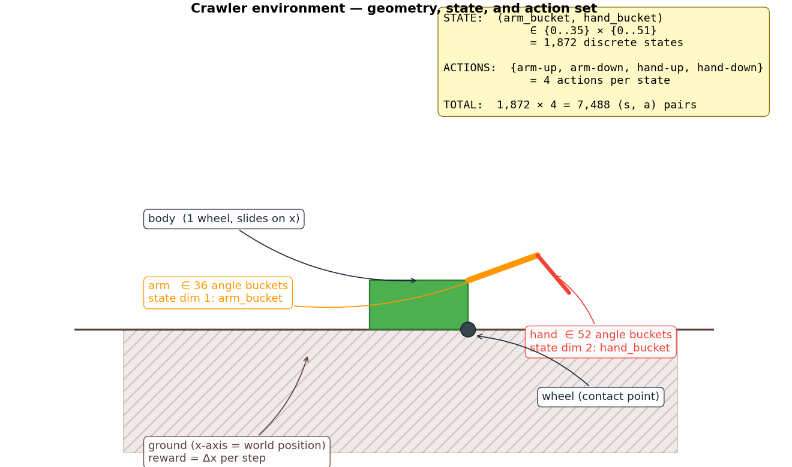
That sounds small, and it is. But the reward structure is brutal: the optimal locomotion gait is a specific repeating pattern of about sixteen actions in a particular corner of state space. Most actions, from most states, do nothing useful.
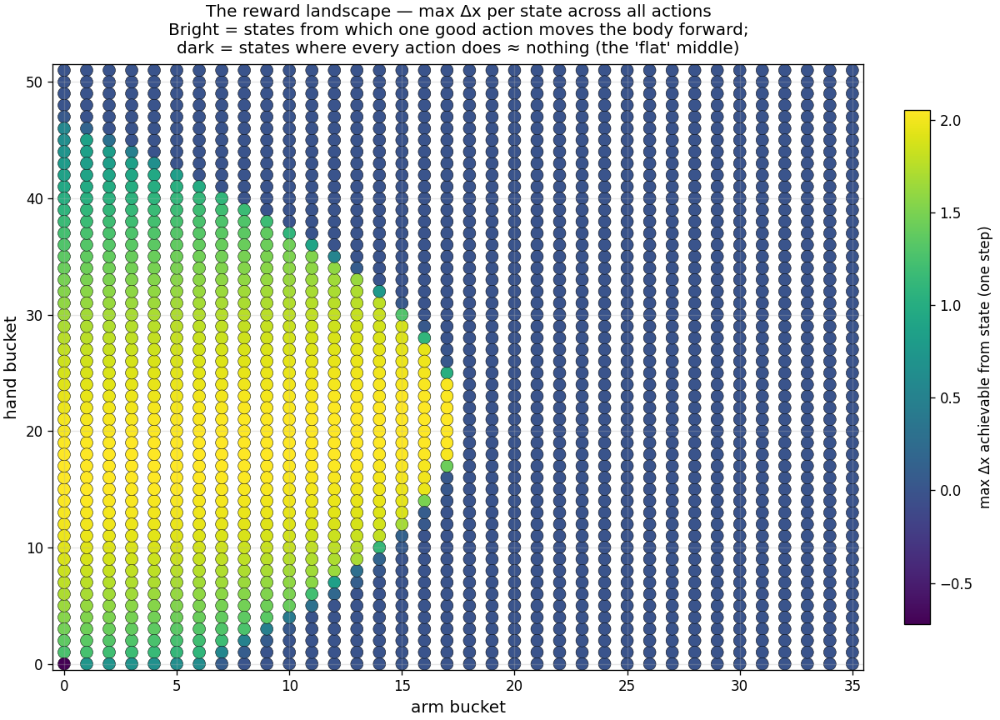
The classical answer is Q-learning. The agent maintains a lookup
table Q[(state, action)] of expected long-run reward,
samples actions, observes rewards, applies the Bellman update
$Q \leftarrow Q + \alpha\,(r + \gamma \max_{a'} Q' - Q)$,
and after enough samples the table converges to the optimal
action-values. This works. We're going to push on it until it
breaks.
Vanilla setup: $\alpha = 0.5$, $\gamma = 0.95$, $\varepsilon$ starts at 1.0 and decays linearly to 0.05 over 60 % of training. Random exploration up front, increasingly greedy as the agent learns. Standard recipe from any textbook.
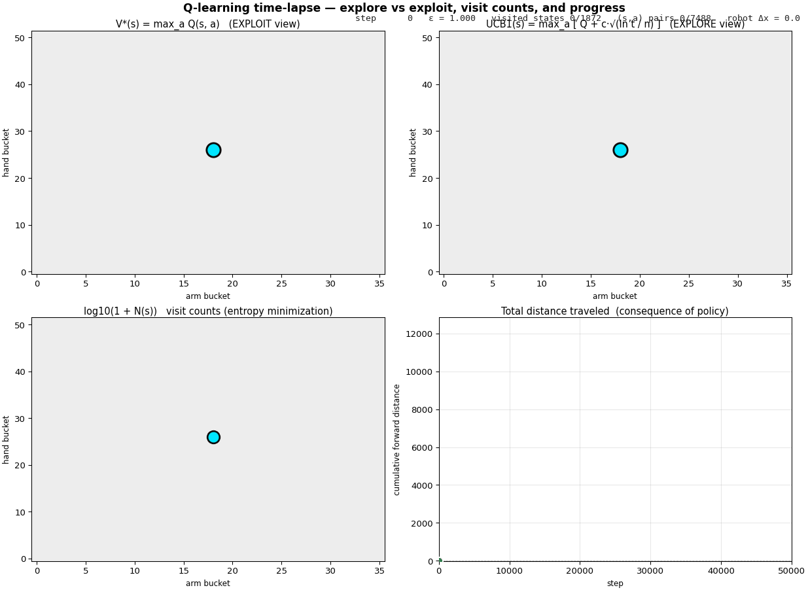
After 30,000 environment steps the arm crawls. The mean velocity is around 0.23 units per step. The peak, the rolling thousand-step average, is about 0.38. It works, and intuitively the agent has learned something.
Right away there are questions. The schedule for $\varepsilon$ matters: too fast a decay and the agent commits before learning; too slow and it never exploits. The learning rate matters. The discount factor matters. Where in the joint space of these knobs is the best policy?
First idea: sweep one knob at a time, hold the others fixed. Vary $\varepsilon$'s decay length across $\{500, 2000, 5000, 15000, 30000, 60000\}$ steps. Five seeds each.
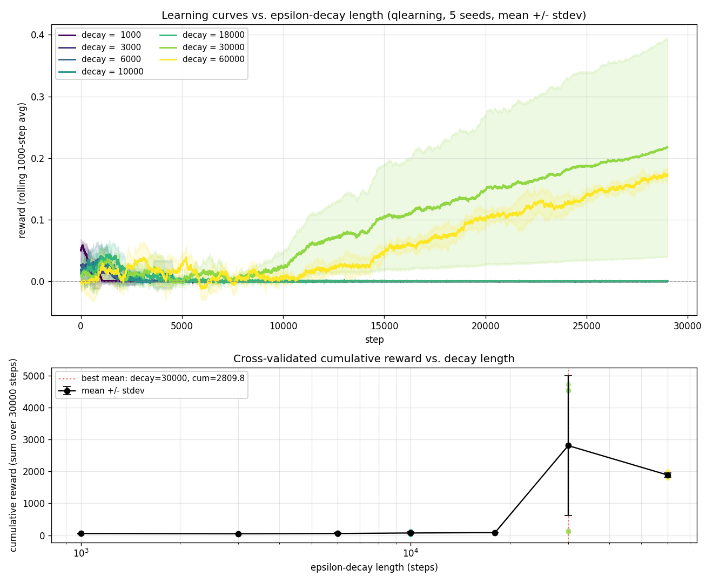
Then we add budget as a second axis. The best decay scales
roughly linearly with budget: decay* ≈ k × B with
$k \approx 0.6$. A scaling law.
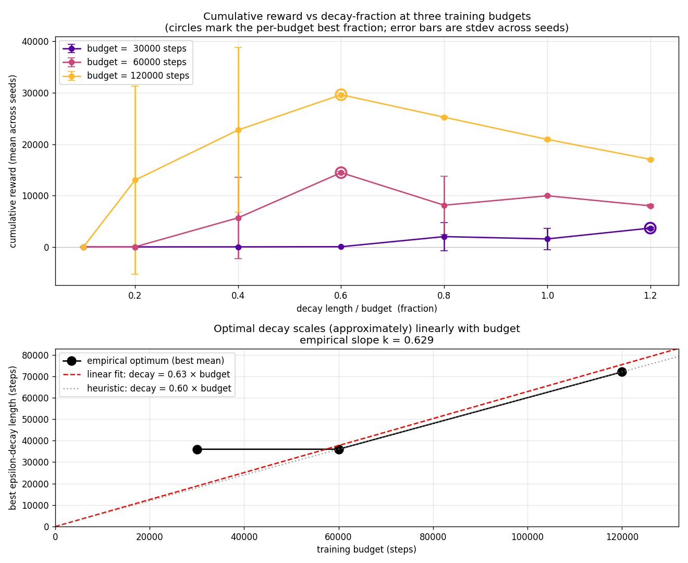
Why grid-sweep when you can use a Gaussian process? 2D BO over $(\alpha, \varepsilon\text{-decay})$ starts with a Latin-hypercube prior and exploits Expected Improvement. After ~40 iterations the GP carves out a smooth posterior surface concentrating right where the sweep said.
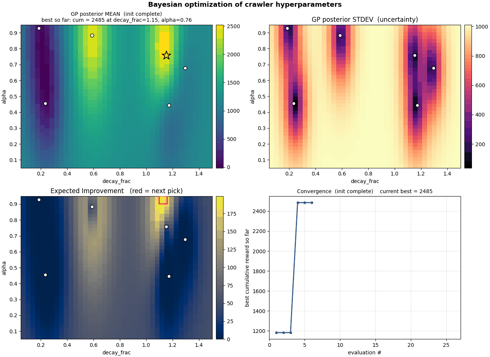
Then we get greedy. 7D BO puts $\alpha$ start/end/decay, $\gamma$, $\varepsilon$ start/end/decay into the GP. The result: BO consistently picks $\alpha$ schedules that go up through training. That contradicts Robbins-Monro, which requires $\sum \alpha = \infty$ and $\sum \alpha^2 < \infty$. Either the textbook is wrong on this domain, or seed noise is fooling the GP. (Spoiler: mostly the latter.)
A thing to notice here that will only matter in retrospect: BO is also model-free. The Gaussian process is a model of the hyperparameter landscape, not of the environment. We're using a model where we don't need one, and refusing to learn one where we should. File that observation away.
Maybe a single agent is the wrong unit. Try sixteen agents in parallel, each with random hyperparameters, periodically having them face off in a tournament. The losers copy the winners' parameters (perturbed slightly) and keep training.
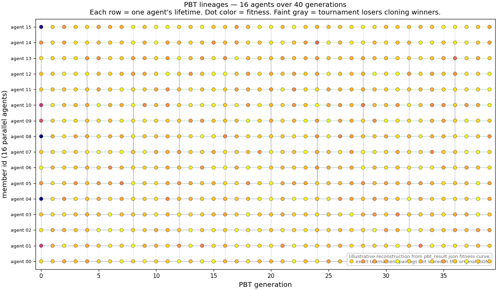
We discover a real problem: the standard PBT recipe copies everything from winner to loser, including the Q-table. But the Q-table is tuned for the winner's body state, not the loser's. The fix: PBT-Pure. Copy only hyperparameters, not Q-tables. The loser keeps its own learned values but gets the winner's schedule recipe. PBT-Pure beats baseline PBT by ~5×.
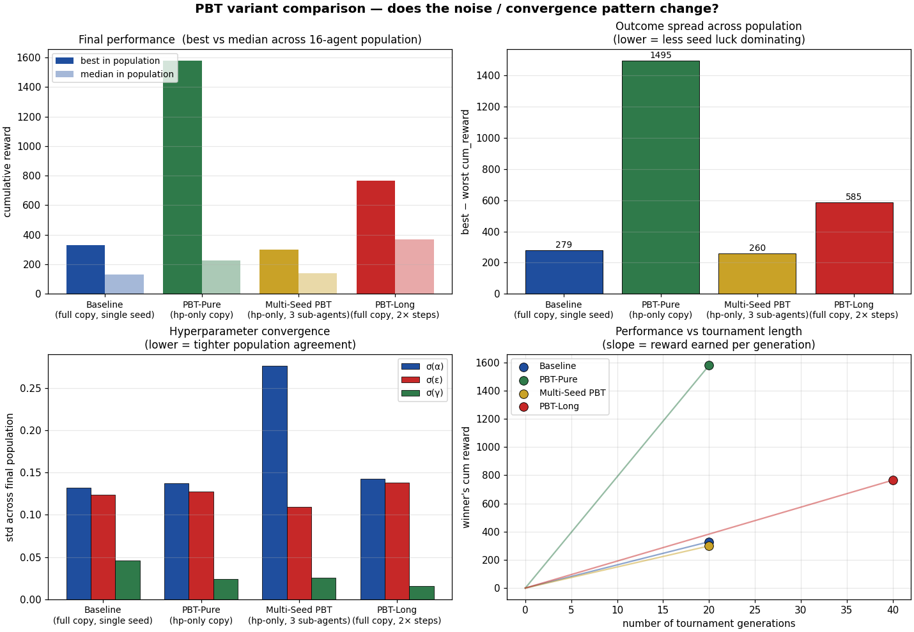
File another thing away: PBT-Pure copies hyperparameters. It never copies what the agent learned about the world, because we never asked the agent to learn anything about the world, only to map states to actions. A model-free optimizer wrapped around a model-free learner.
By now we suspect that the optimum has a particular shape. Sample 50 agents along a dense ε-decay-length gradient at fixed $\alpha$ and $\gamma$.
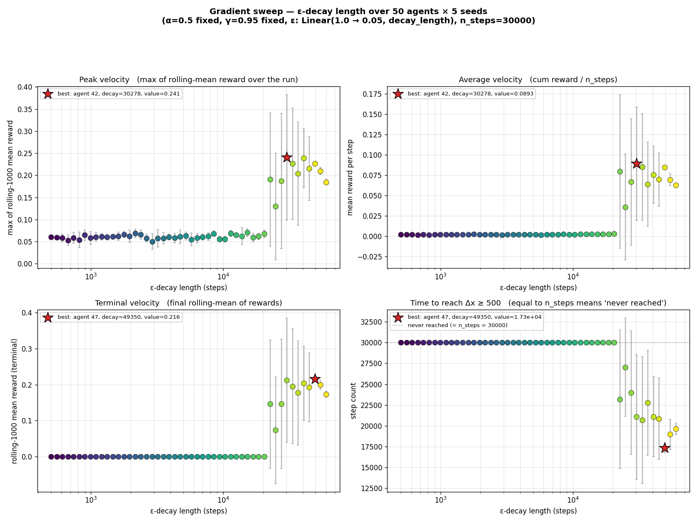
That cliff is the difference between "the agent ran out of exploration before learning the policy" and "the agent had enough exploration runway." If you don't give $\varepsilon$ at least ~22 k steps to decay from 1.0 down toward 0, you don't learn this task.
Hold this thought too. The cliff is at 22 k random walks. That's not a property of the task, that's a property of random walks on this task. A directed exploration strategy that knew where to look wouldn't need 22 k steps of coin-flipping to stumble onto the cycle.
Does the optimum decay length stay invariant if we vary the training budget itself? Run the gradient sweep at five budgets from 10 k to 250 k steps.
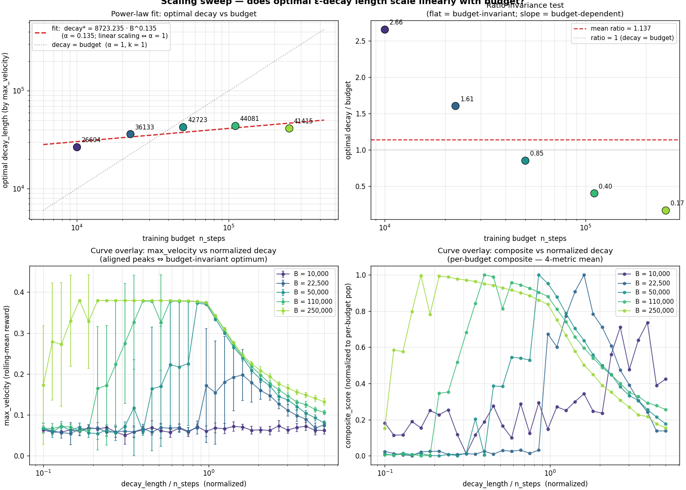
Saturation. We have a scaling law and a number, $T_\infty$. Let's go test what affects it.
Vary one hyperparameter at a time, holding everything else at the optimal recipe.
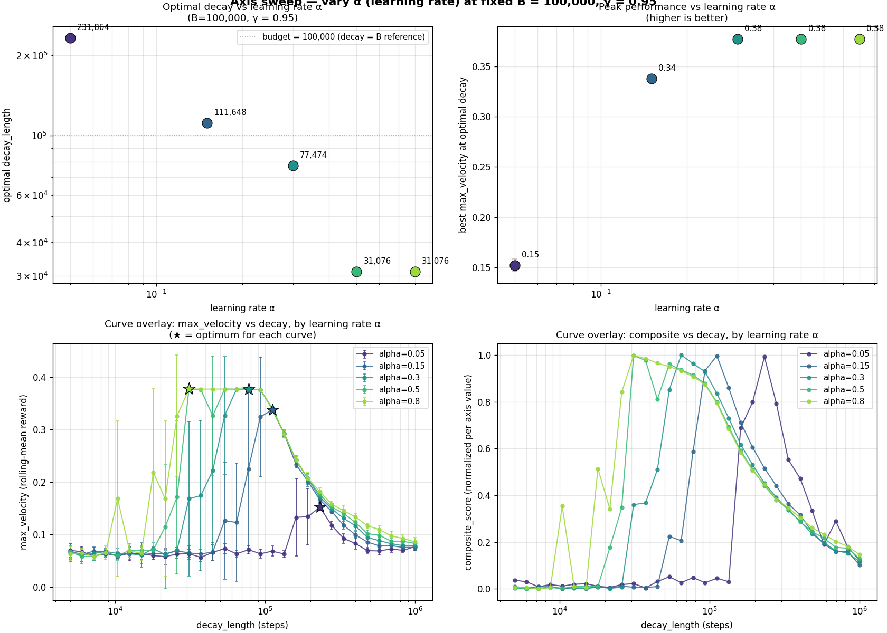
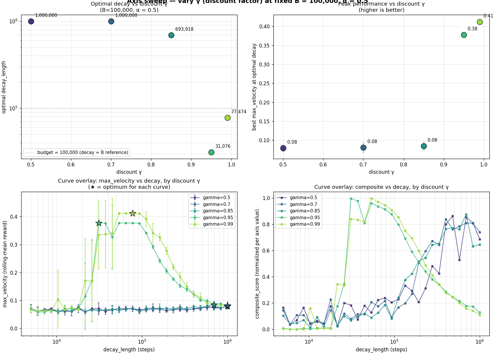
$T_\infty$ is recipe-bound, not task-bound. The "42,000" we extracted earlier was specific to ($\alpha = 0.5$, $\gamma = 0.95$, Linear schedule). Change the recipe, the scaling law changes.
What about DQN? Implemented in NumPy, MLP, experience replay, target network, Adam, run head-to-head with tabular Q-learning under the same recipe.
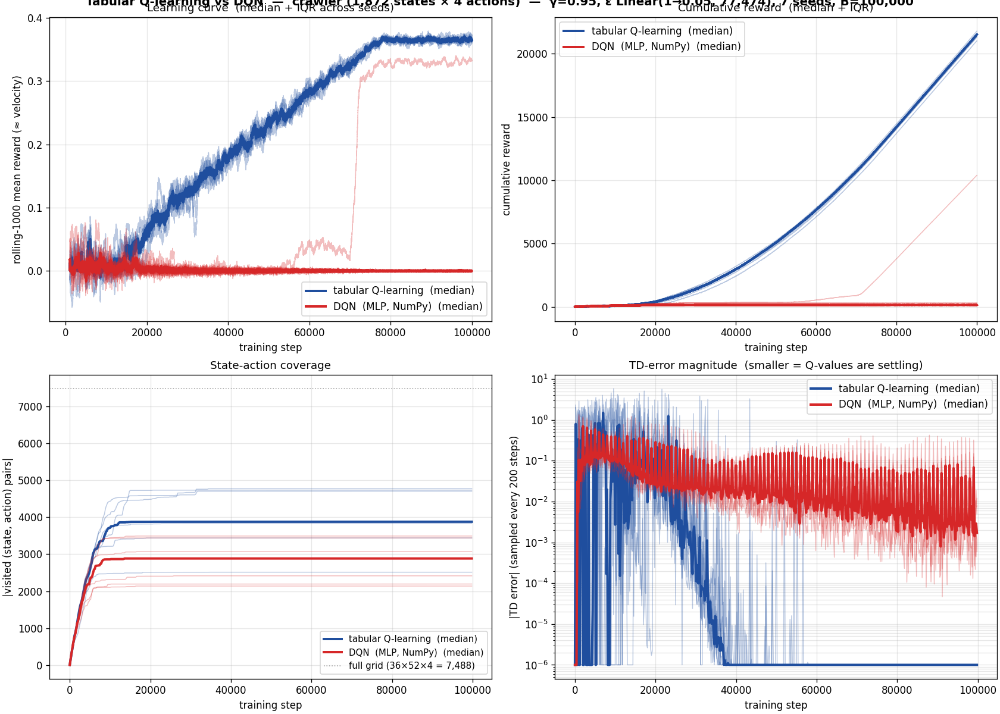
On a problem where tabular Q-learning is provably optimal (small finite deterministic MDP), DQN brings only the cost of function approximation without the benefit. Every algorithm. Every schedule. Every reward shape. We're stuck at 0.41.
Here's the punchline. The crawler is a finite deterministic MDP. It has 1,872 states, 4 actions, and $(s, a) \to (s', r)$ is a function, same input, same output, every time. Determinism = 1.000 across 500,000 random steps.
A deterministic MDP this small doesn't need reinforcement learning. It needs dynamic programming.
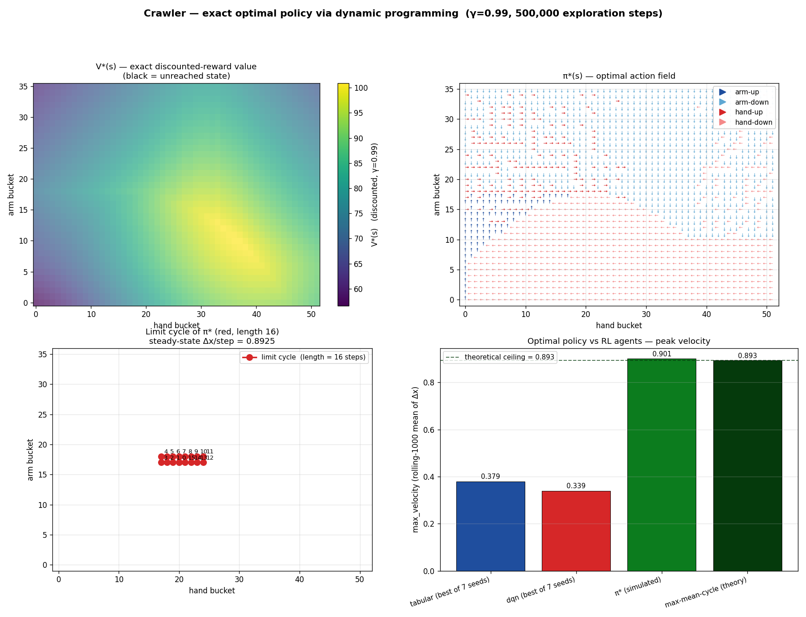
| approach | max_velocity | % of optimum |
|---|---|---|
| π* via VI (γ=0.99) | 0.901 | 100 % |
| Karp's max-mean-cycle | 0.894 | 99 % |
| best tabular Q-learning | 0.379 | 42 % |
| best DQN | 0.340 | 38 % |
The optimal policy crawls 2.4× faster than anything we ever produced. It reaches $x = 500$ in 559 steps. Tabular Q-learning takes 22,000 steps, a 40× speedup by switching to DP.
The whole sprawling stack we built, schedules, BO, PBT, scaling laws, axis sweeps, was optimizing within a basin of attraction at 42 % of optimal. Every improvement we celebrated was an improvement within the basin.
We were locally state-of-the-art. Globally, we were not even close.
And now the question becomes: can we get RL to do what DP just did?
Why didn't Q-learning find the optimum? Because ε-greedy is sample-inefficient. Random exploration is unbiased: it bounces around the middle of state space. The optimal 16-step limit cycle lives in one corner.
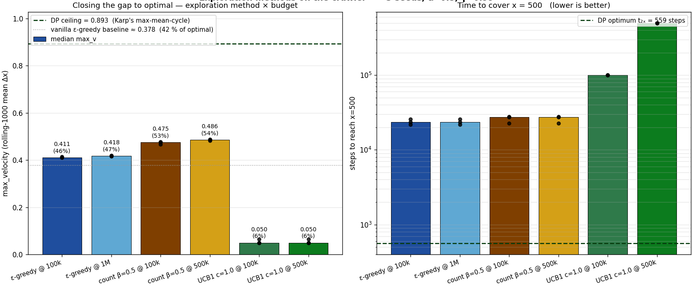
But the gap remains. Even with 5× the budget and better exploration, we're still at 54 %. Count-based exploration is local: if the Q-policy has no path to an undersampled (s, a), you never visit it. This is the deep exploration problem.
Step back. Look at everything we've tried for the last twelve acts. Every single one is model-free RL. The agent never builds a representation of the environment's dynamics. That's the assumption we've been working under without ever questioning it. And the RL literature has been telling us, since the 1990s, that we shouldn't.
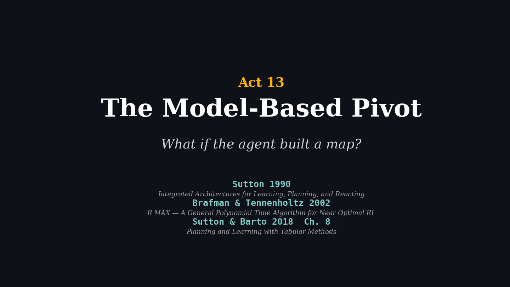
Brafman & Tennenholtz's 2002 R-MAX: maintain the empirical model $T(s, a)$. Treat unknown $(s, a)$ as if they paid the maximum reward $R_{\max}$ forever, so $V_{\text{opt}} = R_{\max}/(1 - \gamma) \approx 100$. Run value iteration on this optimistic model. Act greedy. Once the agent visits an unknown pair, the optimism evaporates and the policy adjusts.
The optimism is the exploration: any $(s, a)$ the agent hasn't visited is mathematically more attractive than any explored one. R-MAX is provably PAC-MDP optimal in polynomial samples. On our MDP with 7,488 (s, a) pairs, that's fewer than ten thousand real steps. Half of what vanilla Q-learning needs just to start moving.
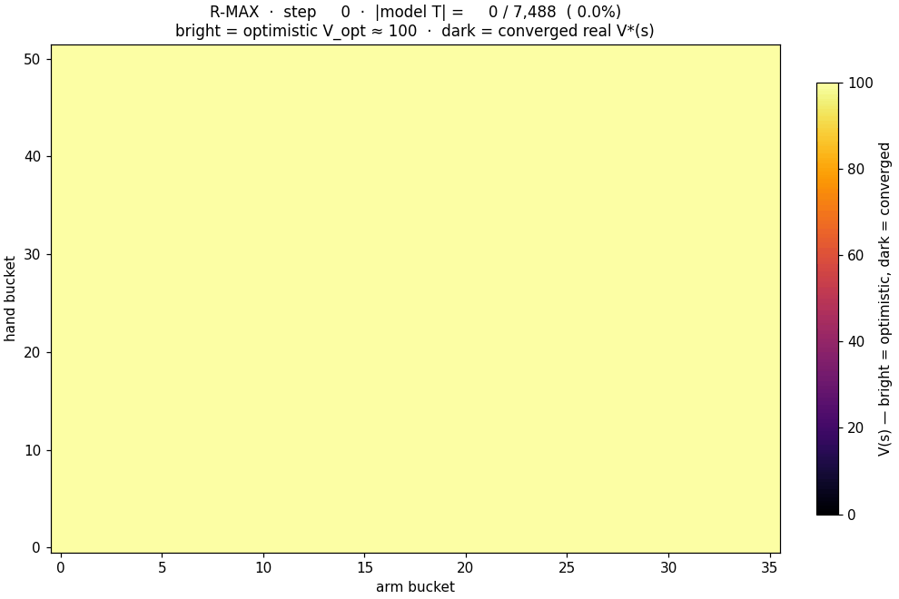
We have to try this.
Three new agents in src/modelBasedAgents.py: Dyna-Q
(bare Sutton 1990 recipe), Dyna-Q+ (with the κ·√τ staleness bonus
from S&B §8.3), R-MAX (Brafman-Tennenholtz 2002 with $m = 1$,
$K = 20$ VI sweeps after each new $(s, a)$ is discovered, warm-started
from the previous $V$).
| condition | budget | max_v | % of DP | t to 85 % |
|---|---|---|---|---|
| ε-greedy | 100 k | 0.411 | 46 % | never |
| count-based β=0.5 | 100 k | 0.475 | 53 % | never |
| UCB1 c=1.0 | 100 k | 0.050 | 6 % | never |
| Dyna-Q n=50 | 30 k | 0.865 | 97 % | 23 460 |
| Dyna-Q+ n=50 | 30 k | 0.868 | 97 % | 23 323 |
| R-MAX m=1 | 10 k | 0.901 | 101 % | 7 595 |
| DP optimum (Karp) | - | 0.893 | 100 % | 559 |
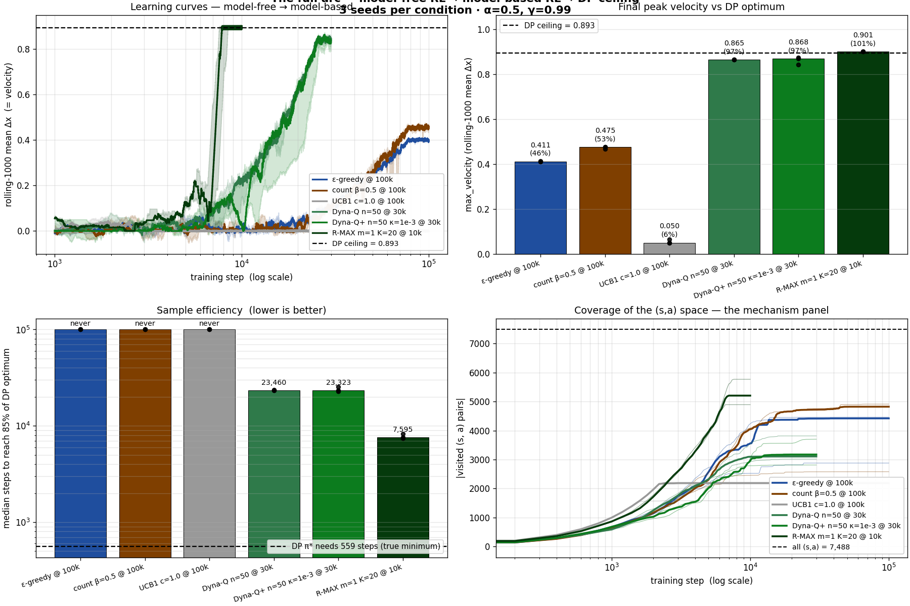
Three things to notice.
One: Dyna-Q alone, bare model + planning, no exploration trick, closes 84 % of the gap. Just learning the transition table and replaying it 50 times per real step takes us from 0.41 to 0.87. The architecture is doing all the work.
Two: R-MAX matches DP exactly. All three seeds reach $\max_v = 0.901$, identical to value iteration on the offline-computed table. We validated this: dumping R-MAX's learned $T$ after 10 k steps and comparing to the offline DP oracle on shared $(s, a)$ pairs, the number of mismatches is zero.
Three: sample efficiency is the headline. R-MAX reaches 85 % of the DP optimum in a median of 7,595 environment steps. Vanilla Q-learning at 1,000,000 steps, 130× more environment interaction, never gets there.
The bar chart says it numerically. The race animation says it viscerally. And the gait R-MAX discovers, the 16-step optimal cycle the narrative kept referring to, looks like this in slow-motion:
What did we actually learn?
1. The right axis of RL design is model-free vs model-based, not "tune ε vs use a neural net." Every improvement we made for twelve acts was within the model-free regime. None of it touched the bottleneck. The moment we changed what the agent knows about the world, from "Q-values only" to "Q-values plus an empirical transition table" , performance jumped from 46 % to 97 % in one move.
2. Optimism under uncertainty is the principled exploration strategy. R-MAX doesn't need an ε-schedule because the math says undiscovered $(s, a)$ pairs are worth more than discovered ones. It's not a heuristic, it's the consequence of treating "I don't know" as "I should find out."
3. Hyperparameter optimization within the wrong algorithm class is wasted work. All the BO, PBT, evolutionary refinement, scaling laws, they were optimizing within model-free RL's basin of attraction. If you're consistently far from a known ceiling, the right move isn't more tuning; it's changing the algorithm.
4. When you can learn the model, learn the model. RL's value proposition is bridging environments you can't write down, Atari, robotics, language games. The crawler isn't that. It's a 1,872-state deterministic MDP that DP can solve in three seconds. And the surprise: even on a problem DP could solve, RL can match DP, but only if you let RL learn the model.
5. The 1990s and 2000s RL papers are not vintage curiosities. Sutton's Dyna (1990), Brafman-Tennenholtz's R-MAX (2002), Moore & Atkeson's prioritized sweeping (1993): these are the references that resolved a problem we spent twelve acts not resolving.
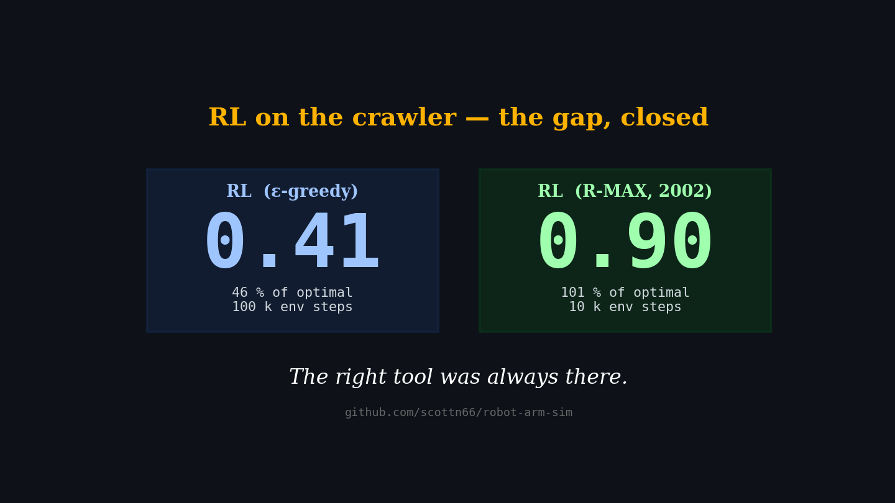
The robot arm crawls. It crawls fast, 0.901 distance units per step, the physical maximum we can prove with a 1957 algorithm and an algorithm from 1978. We didn't get there by tuning more carefully. We got there by asking a different question: should the agent be building a map?
The answer for this problem is yes. The answer for Atari is no - the map is too big to store. The answer for most engineering problems is somewhere in between, and figuring out where on that spectrum your problem lives is more important than choosing between Adam and SGD.
Choose your algorithm class first; everything else is downstream.